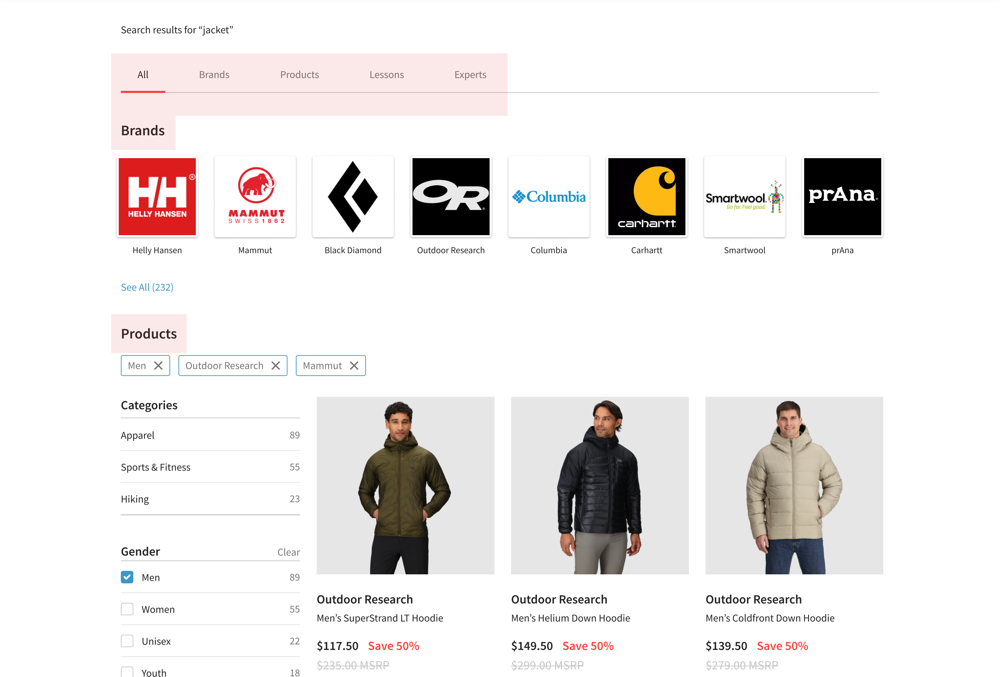
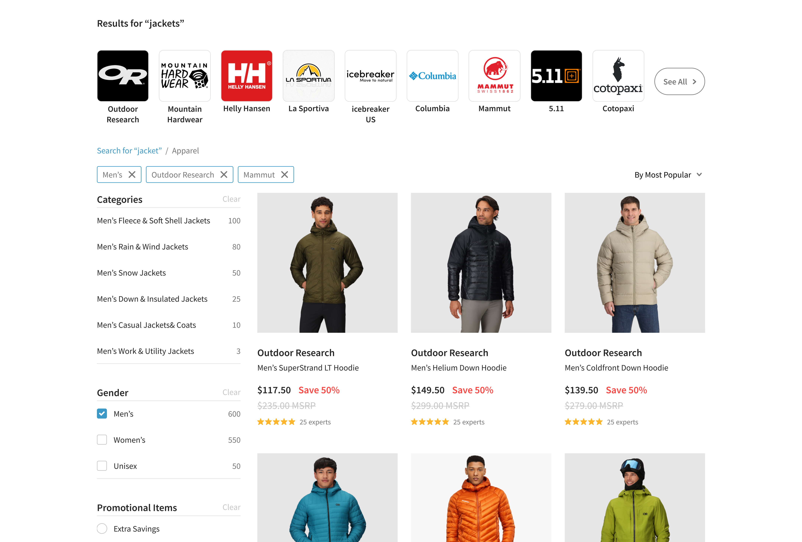
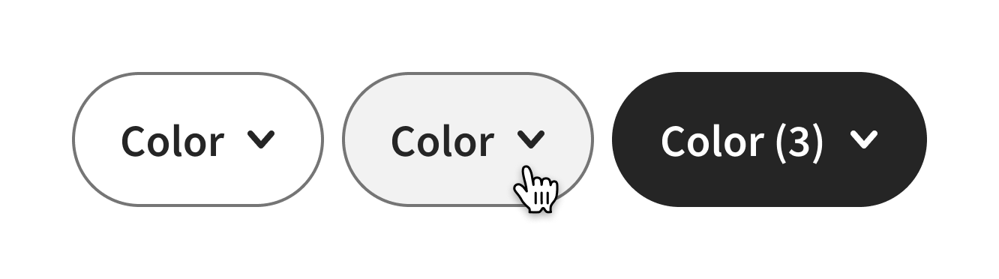
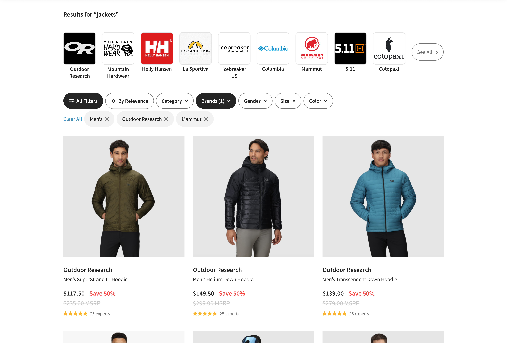
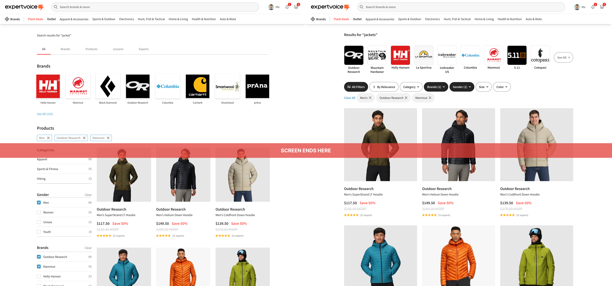

Filtering
Ecommerce · Product discovery
Overview
A clearer, more intuitive way for shoppers to narrow a catalog and find the products that fit their needs on ExpertVoice.
Impact
+0.74% tot. annual GMV**Expected to increase as remaining work ships.
Role
Lead UX designer
Before
What’s wrong with the PLP here?


1. The quick wins
Remove unnecessary UI
2. Make controls obvious
Implement filter pills
3. Space optimization
A/B test layout variants
4. Attribute filters
Allow users to filter by size, color, etc.
Step 1 — The quick wins
Remove unnecessary UI


Step 2 — Implement filter pills
Replace filter panel with more space-efficient pills


Step 3 — Space optimization
A/B test layout variants
Larger product cards

Extra column of products

Step 4 — Attribute filters
Allow users to filter by size, color, etc.
Final designs & impact
Try it yourself! Filter these products to your size and colors.
Fold comparison

Impact
This sustained conversion is worth roughly $2–4M in annual GMV.